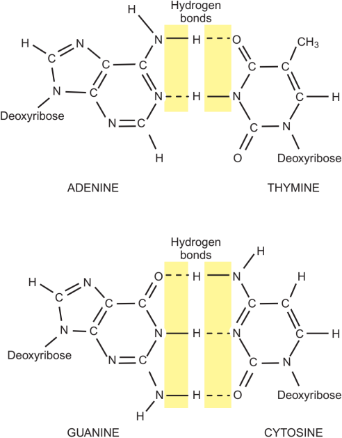
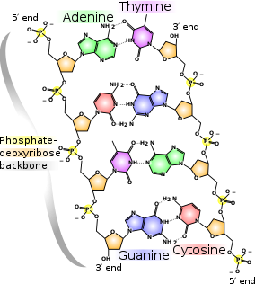

Nucleic acids
Nucleic acids are responsible for storing and transmitting genetic information and therefore have a central role in biology. Cells contain two types of nucleic acid, deoxyribonucleic acid (DNA) and ribonucleic acid (RNA). The function of DNA is to store genetic information in all cells and in some viruses. RNA can also store genetic information and forms the chromosomes of other viruses, but has many other functions including decoding the genetic information in all forms of life and catalyzing the key chemical reactions during protein synthesis.
DNA and RNA are polymers that are synthesized from building blocks known as nucleotides. Other types of nucleotides also participate in a wide range of biochemical processes that include working together with proteins to catalyze chemical reactions and transfer chemical energy, most notably through the activity of adenosine triphosphate (ATP). Nucleotides are also commonly used as carriers of chemical groups that can be transferred to other molecules, to which they are covalently joined. We will see throughout this book several examples of the central role played by nucleotides in the many biochemical processes in cells.
Cells contain nucleotides of two general types
Nucleotides are small molecules composed of an aromatic group known as a base (also called a nucleobase), a sugar, and one or more phosphate groups; this structure is shown in Figure 1.

RNA and DNA differ in the sugar their nucleotides contain. RNA contains the sugar ribose, while DNA contains the sugar deoxyribose as shown in Figure 2.19. DNA features two types of bases: the purine bases, adenine (A) and guanine (G), and the pyrimidine bases, cytosine (C) and thymine (T). The structure of these bases is illustrated in Figure 2.20. RNA also contains adenine, guanine, and cytosine, but with uracil (U) in place of thymine. The bases are planar, conjugated rings that are typically uncharged under physiological conditions, but can gain or lose a proton at near physiological pH. The pKa, values for each base, which are listed in Figure 2.20, correspond to the pH at which this transition generally occurs: a given atom is protonated at pH values below the pKa, and unprotonated at pH values above the pKa. This property of bases is particularly important for the ability of RNA molecules to participate in chemical reactions, as we will see later in this book.
A base is joined to a sugar by a glycosidic bond, which is a covalent bond between the C1’ atom of the sugar and the N9 atom of the purine or the N1 atom of the pyrimidine (the numbering convention is shown in Figures 2.19 and 2.20). A base and sugar covalently linked in this way is called a nucleoside.
Nucleosides are named for the base and are called adenosine (A), guanosine (G), cytidine (C), thymidine (T), and uridine (U), and have a prefix indicating the linked sugar from which they are formed.


The base pairing thorugh hydrogen bonding in DNA is size complementary: Large bases (purines) pair with small bases (pyrimidines). So, although the bases themselved differ in size, all of the allowed base pairs are the same width, providing for a uniform width of the helix. The A−T base pair has two hydrogen bonds and the G−C base pair is held together by three.
A nucleotide is formed when one or more phosphate groups are attached by phosphate ester linkages to either the 3’ or 5’ hydroxyl groups of the nucleoside sugar as illustrated in Figure 2.18, giving rise to ribonucleotides and deoxy-ribonucleotides. The term ‘phosphate ester’ describes the chemical nature of the covalent bond that joins the phosphate group to the nucleoside. All nucleic acids and their fragments have negative charges under alkaline pH due to the presence of phosphate groups on the molecules. Nucleic acids are polyelectrolytes with one negative charge per nucleotide residue (due to the ionization of the phosphate diester) in the pH range 4–11. The phosphate groups are acidic (hence ‘nucleic acid’), which means that they are negatively charged at physiological pH.
| base | atom | pKa |
|---|---|---|
| adenine | N1 | 3.88 |
| cytosine | N3 | 4.56 |
| guanine | N7 | 3.60 |
| guanine | N1 | 10.0 |
| thymine | N3 | 10.5 |
| uracil | N3 | 10.1 |
The sugar found in DNA is a variant of the five-carbon sugar called ribose. The structure of ribose is drawn below. Each carbon of ribose is numbered as shown. Because the -OH group on the 2’ carbon is missing in the form of ribose found in DNA, the sugar in DNA is called 2’-deoxyribose.
Structure
A free, unincorporated nucleotide usually exists in a triphosphate form; that is, it contains a chain of three phosphates. In DNA, however, it loses two of these phosphate groups, so that only one phosphate is incorporated into a strand of DNA. When nucleotides are incorporated into DNA, adjacent nucleotides are linked by a phosphodiester bond: a covalent bond is formed between the 5’ phosphate group of one nucleotide and the 3’-OH group of another (see below). In this manner, each strand of DNA has a “backbone” of phosphate-sugar-phosphate-sugar-phosphate. The backbone has a 5’ end (with a free phosphate) and a 3’ end (with a free OH group). In the structure below, each nucleotide is drawn in a different color, for clarity.
Hydrogen-bond interactions between the bases allow two strands of DNA to form the double helix. These interactions are specific: A base pairs with T, and C base pairs with G. This occurs via hydrogen bonds, which are shown with dotted lines in the figure above. If DNA were thought of as a spiral staircase, the base pairs would be the steps. The width of each “step” is approximately the same size, since a base pair always consists of one pyrimidine and one purine. The strands of DNA run anti-parallel, or in opposite directions: the 5’ end of one strand is paired with the 3’ end of the other. This is illustrated in the figure below.
This structure places the non-polar bases of DNA in the center of the double-stranded molecule, surrounded by the charged phosphate groups. This has two functional consequences. First, remember that like charges repel each other. The double-helix structure, with negatively charged phosphates on the outside edges, allows the phosphates to be as far apart as possible. Second, the non-polar, uncharged bases are hidden in the center of the helix. The cellular environment is aqueous and therefore polar, so surrounding the non-polar bases with charged phosphates maximizes the solubility of DNA under physiological conditions. More information on polarity can be found in the tutorial on bonding.
Because of the specificity of hydrogen bonding, in the context of DNA A always pairs with T, and G with C. Therefore, if the sequence of one strand of DNA is known, the sequence of the other strand can be determined as well. In this way, if one strand of DNA is known to have the sequence 5’-ATGGCT-3’, the other strand must have the sequence 3’-TACCGA-5’. (Remember that the strands run antiparallel, so the 5’ end of one strand must be able to pair with the 3’ end of the other.) These strands are called complementary.
Replication Process
DNA replication, like all biological polymerization processes, proceeds in three enzymatically catalyzed and coordinated steps: initiation, elongation and termination.
Initiation
For a cell to divide, it must first replicate its DNA. Nuclear DNA is replicated during S phase (Synthesis) o the cell cycle, which usually takes a ew hours. This process is initiated at particular points in the DNA, known as "origins", which are targeted by initiato proteins. In E. coli this protein is DaaA ; in yeast, this is the origin recognition complex. Sequences used by initiator proteins the to be "AT-rich" (rich in adenine and thymine bases), becase A-T base pairs have two hydrogen bonds (rather than the three formed in C-G pair) and thus are easier to strand separate. Once the initiators recruit other proteins and form the pre-replication complex, which unzips the double-stranded DNA.
Elongation
DNA polymerase has 5'-3' activity. All known DNA replicatoin systems require a free 3' hydroxyl group already base-paired to the template, before synthesis can be initiated (note: the DNA template is read in 3' to 5' direction whereas a new strand is synthesized in the 5' to 3' direction - this is often confused). Because DNA polymerase can elongate DNA only in a 5' to 3' direction, only one strand of single-stranded DNA at each replication fork can be extended continuously.